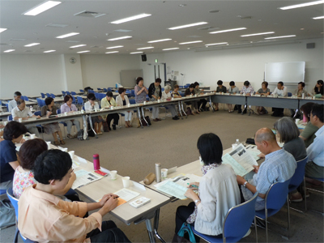

7月18日（木）午後1時30分より浦和コミュニティセンター第15集会室で24団体、42人が出席して開催されました。

■議 題
- 自己紹介、第2回プレ学習会(118人)、前回の実行委員会について報告され、大会に向けた検討スケジュールの後半についても確認しました。
- 第49回大会基調報告 素案
世界情勢と、日本の経済、教育、高齢化と貧困、平和、食の安全、震災復興、省エネ創エネ、消費者被害等の課題について問題提起、意見交換しました。
- 全体会について
司会者を確認し、記念講演タイトル、オープニング斉唱の参加者、大会スローガン、実行委員会の弁当について、決定しました。また参加者の保険について検討しました。
- 大会チラシ・大会資料
チラシの案について検討し、次回までにそれぞれの配布の方法で送付すること。資料について、各団体に活動紹介を記載してもらうことなどを確認しました。
- 平成25年度市町村における消費生活関連事業調査
4市で消費者団体が行政を訪問し、調査依頼をしたことなどについて報告されました。
- 基調報告・県への要請への意見・活動報告
- 分科会について
責任団体から、各分科会の進捗について報告があり、その後担当に分かれて、テーマや助言者について話し合いました。
|